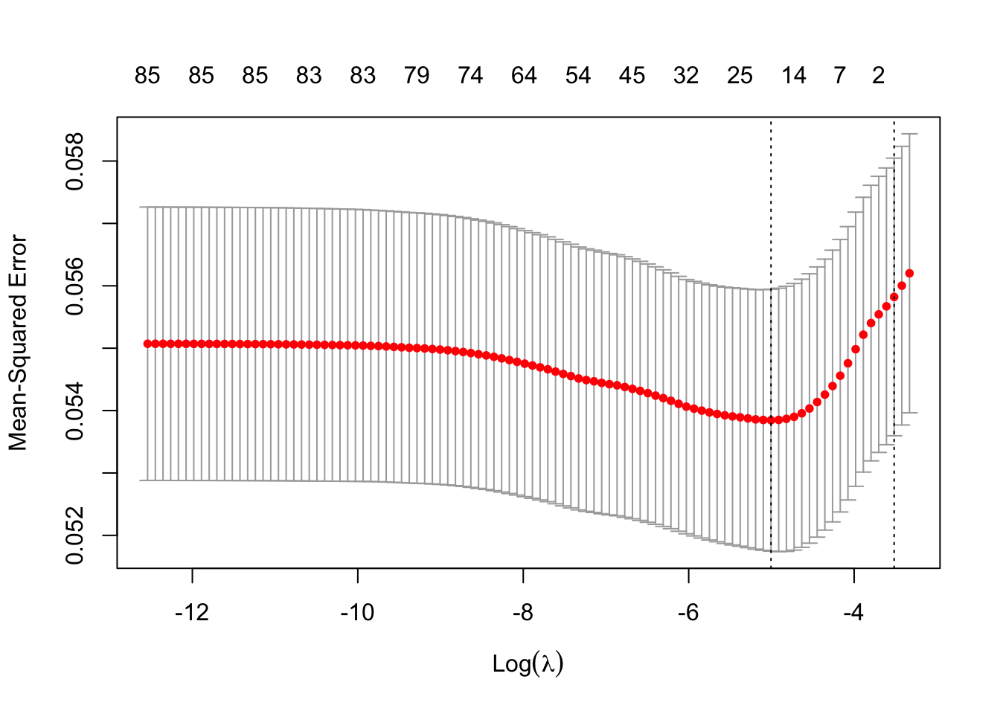
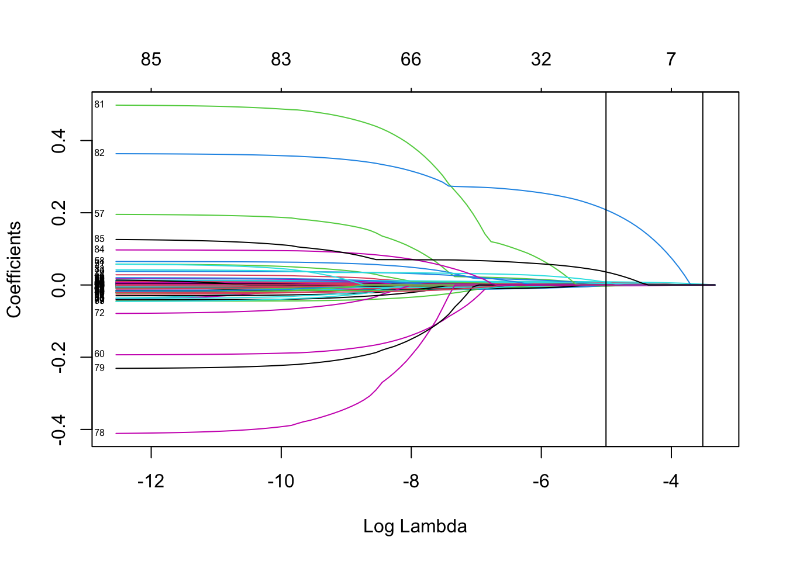
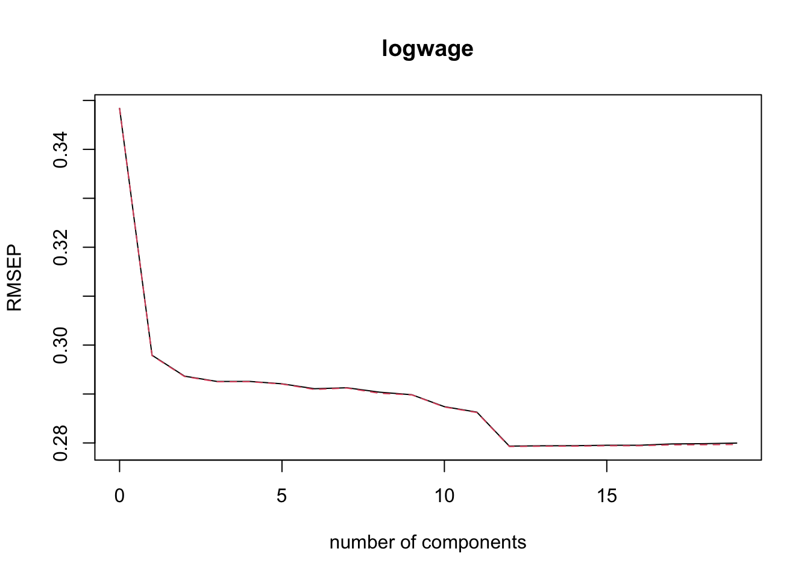
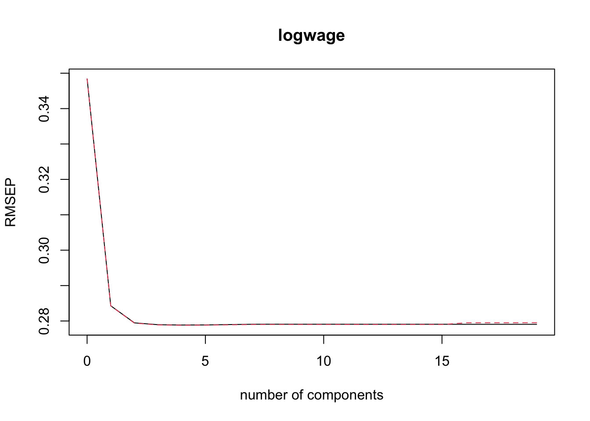

library(ISLR)
insurance_data <- CaravanSection 6.2 - Ridge, Lasso, PCA/PCR, PLS Code
LASSO and Ridge Regression
We will use the Caravan data set that is included in the package ISLR. This data set contains information on people offered Caravan insurance.
Let’s learn a little more about the data
?CaravanLet’s try to predict CARAVAN. Note: although this is a binary variable, ridge and lasso are regression algorithms – regression can often give you a good sense of the ordinal distribution of likelihood that the outcome will be 1 even if the resulting value cannot be viewed as a probability). When you run lasso and ridge, you will need to provide a penalty parameter. Since we don’t know which penalty parameter is best, we will use a built in cross-validation function to find the best penalty parameter (lambda) in the package glmnet
library(glmnet)Loading required package: MatrixLoaded glmnet 4.1-8?cv.glmnetWe will start by using the function’s built-in sequence of lambdas and glmnet standardization
set.seed(222) # Important for replicability
lasso_ins <- cv.glmnet(x = as.matrix(insurance_data[, 1:85]), # the features
y = as.numeric(insurance_data[, 86]), # the outcome
standardize = TRUE, # Why do we do this?
alpha = 1) # Corresponds to LASSOWe can see which lambda sequence was used
print(lasso_ins$lambda) [1] 3.577561e-02 3.259740e-02 2.970154e-02 2.706294e-02 2.465874e-02
[6] 2.246812e-02 2.047212e-02 1.865343e-02 1.699631e-02 1.548641e-02
[11] 1.411064e-02 1.285709e-02 1.171490e-02 1.067418e-02 9.725915e-03
[16] 8.861891e-03 8.074625e-03 7.357298e-03 6.703696e-03 6.108158e-03
[21] 5.565526e-03 5.071100e-03 4.620597e-03 4.210116e-03 3.836101e-03
[26] 3.495312e-03 3.184799e-03 2.901870e-03 2.644076e-03 2.409183e-03
[31] 2.195158e-03 2.000146e-03 1.822459e-03 1.660557e-03 1.513037e-03
[36] 1.378623e-03 1.256150e-03 1.144557e-03 1.042878e-03 9.502315e-04
[41] 8.658156e-04 7.888989e-04 7.188153e-04 6.549577e-04 5.967731e-04
[46] 5.437574e-04 4.954515e-04 4.514370e-04 4.113325e-04 3.747909e-04
[51] 3.414955e-04 3.111580e-04 2.835156e-04 2.583288e-04 2.353796e-04
[56] 2.144691e-04 1.954163e-04 1.780560e-04 1.622380e-04 1.478253e-04
[61] 1.346929e-04 1.227271e-04 1.118244e-04 1.018902e-04 9.283857e-05
[66] 8.459104e-05 7.707621e-05 7.022897e-05 6.399002e-05 5.830533e-05
[71] 5.312564e-05 4.840611e-05 4.410584e-05 4.018760e-05 3.661744e-05
[76] 3.336445e-05 3.040045e-05 2.769975e-05 2.523898e-05 2.299682e-05
[81] 2.095385e-05 1.909237e-05 1.739625e-05 1.585082e-05 1.444267e-05
[86] 1.315963e-05 1.199056e-05 1.092535e-05 9.954775e-06 9.070420e-06
[91] 8.264629e-06 7.530422e-06 6.861440e-06 6.251889e-06 5.696488e-06
[96] 5.190428e-06 4.729325e-06 4.309185e-06 3.926368e-06 3.577561e-06Let’s find the lambda that does the best as far as CV error goes
print(lasso_ins$lambda.min)[1] 0.006703696You can plot the model results
plot(lasso_ins)
You can also plot the CV-relevant outputs
LassoCV <- lasso_ins$glmnet.fit
plot(LassoCV, label = TRUE, xvar = "lambda")
abline(
v = log(c(lasso_ins$lambda.min, lasso_ins$lambda.1se))
) # Adds lines to mark the two key lambda values
You can see the coefficients corresponding to the two key lambda values using the predict function
predict(lasso_ins, type = "coefficients",
s = c(lasso_ins$lambda.min, lasso_ins$lambda.1se))86 x 2 sparse Matrix of class "dgCMatrix"
s1 s2
(Intercept) 0.9896239538 1.053595130
MOSTYPE . .
MAANTHUI . .
MGEMOMV . .
MGEMLEEF . .
MOSHOOFD . .
MGODRK . .
MGODPR . .
MGODOV . .
MGODGE . .
MRELGE 0.0018180263 .
MRELSA . .
MRELOV . .
MFALLEEN . .
MFGEKIND . .
MFWEKIND . .
MOPLHOOG 0.0022611683 .
MOPLMIDD . .
MOPLLAAG -0.0024753875 .
MBERHOOG . .
MBERZELF . .
MBERBOER -0.0030373898 .
MBERMIDD . .
MBERARBG . .
MBERARBO . .
MSKA . .
MSKB1 . .
MSKB2 . .
MSKC . .
MSKD . .
MHHUUR -0.0007565131 .
MHKOOP . .
MAUT1 0.0013643467 .
MAUT2 . .
MAUT0 . .
MZFONDS . .
MZPART . .
MINKM30 . .
MINK3045 . .
MINK4575 . .
MINK7512 . .
MINK123M . .
MINKGEM 0.0028225067 .
MKOOPKLA 0.0025557889 .
PWAPART 0.0076586029 .
PWABEDR . .
PWALAND -0.0008184860 .
PPERSAUT 0.0087316235 0.002079863
PBESAUT . .
PMOTSCO . .
PVRAAUT . .
PAANHANG . .
PTRACTOR . .
PWERKT . .
PBROM . .
PLEVEN . .
PPERSONG . .
PGEZONG . .
PWAOREG 0.0010472132 .
PBRAND 0.0042630439 .
PZEILPL . .
PPLEZIER . .
PFIETS . .
PINBOED . .
PBYSTAND . .
AWAPART . .
AWABEDR . .
AWALAND . .
APERSAUT 0.0006293082 .
ABESAUT . .
AMOTSCO . .
AVRAAUT . .
AAANHANG . .
ATRACTOR . .
AWERKT . .
ABROM . .
ALEVEN . .
APERSONG . .
AGEZONG . .
AWAOREG . .
ABRAND . .
AZEILPL . .
APLEZIER 0.2083116609 .
AFIETS 0.0076146528 .
AINBOED . .
ABYSTAND 0.0361586998 . Questions you should be able to answer :
- Which lambda in the sequence had the lowest CV error?
lasso_ins$lambda.min[1] 0.006703696- What is the CV error of the “best” lambda?
lasso_ins$cvm[lasso_ins$lambda == lasso_ins$lambda.min][1] 0.05384566- What is the standard deviation of the CV error for the “best” lambda?
lasso_ins$cvsd[lasso_ins$lambda == lasso_ins$lambda.min][1] 0.002099205- What is the largest lambda whose CV error was within 1 standard deviation of the lowest CV error?
lasso_ins$lambda.1se[1] 0.02970154When you do ridge regression, the code is almost exactly the same as for lasso in R. You just need to change the alpha parameter from 0 to 1. I’ll leave this to you as an exercise.
Principal Components Analysis (PCA) and Partial Least Squares (PLS)
We will use the Wage data set that is included in the package ISLR. This data set contains information on people’s wages.
wage_data <- WageLet’s learn a little more about the data
summary(wage_data)The data set contains 3000 observations on 11 variables. The variables are:
str(wage_data)'data.frame': 3000 obs. of 11 variables:
$ year : int 2006 2004 2003 2003 2005 2008 2009 2008 2006 2004 ...
$ age : int 18 24 45 43 50 54 44 30 41 52 ...
$ maritl : Factor w/ 5 levels "1. Never Married",..: 1 1 2 2 4 2 2 1 1 2 ...
$ race : Factor w/ 4 levels "1. White","2. Black",..: 1 1 1 3 1 1 4 3 2 1 ...
$ education : Factor w/ 5 levels "1. < HS Grad",..: 1 4 3 4 2 4 3 3 3 2 ...
$ region : Factor w/ 9 levels "1. New England",..: 2 2 2 2 2 2 2 2 2 2 ...
$ jobclass : Factor w/ 2 levels "1. Industrial",..: 1 2 1 2 2 2 1 2 2 2 ...
$ health : Factor w/ 2 levels "1. <=Good","2. >=Very Good": 1 2 1 2 1 2 2 1 2 2 ...
$ health_ins: Factor w/ 2 levels "1. Yes","2. No": 2 2 1 1 1 1 1 1 1 1 ...
$ logwage : num 4.32 4.26 4.88 5.04 4.32 ...
$ wage : num 75 70.5 131 154.7 75 ...To the view the levels of a particular factor variable, we can use:
levels(wage_data$maritl)[1] "1. Never Married" "2. Married" "3. Widowed" "4. Divorced"
[5] "5. Separated" levels(wage_data$region)[1] "1. New England" "2. Middle Atlantic" "3. East North Central"
[4] "4. West North Central" "5. South Atlantic" "6. East South Central"
[7] "7. West South Central" "8. Mountain" "9. Pacific" Notice there is a variable called “wage” and a variable called “logwage”. We just need one of these two. Let’s drop “wage”.
wage_data <- wage_data[, -11]Looking at the data, we see there are integer, factor, and numeric variable types. Let’s convert everything to numeric variables, which includes converting factor variables to a series of indicators.
for(i in 10:1){
if(is.factor(wage_data[, i])){
for(j in unique(wage_data[, i])){
new_col <- paste(colnames(wage_data)[i], j, sep = "_")
wage_data[, new_col] <- as.numeric(wage_data[, i] == j)
}
wage_data <- wage_data[, -i]
} else if(typeof(wage_data[, i]) == "integer") {
wage_data[, i] <- as.numeric(as.character(wage_data[, i]))
}
}Check your code worked
#View(wage_data)
summary(wage_data) year age logwage health_ins_2. No
Min. :2003 Min. :18.00 Min. :3.000 Min. :0.0000
1st Qu.:2004 1st Qu.:33.75 1st Qu.:4.447 1st Qu.:0.0000
Median :2006 Median :42.00 Median :4.653 Median :0.0000
Mean :2006 Mean :42.41 Mean :4.654 Mean :0.3057
3rd Qu.:2008 3rd Qu.:51.00 3rd Qu.:4.857 3rd Qu.:1.0000
Max. :2009 Max. :80.00 Max. :5.763 Max. :1.0000
health_ins_1. Yes health_1. <=Good health_2. >=Very Good
Min. :0.0000 Min. :0.000 Min. :0.000
1st Qu.:0.0000 1st Qu.:0.000 1st Qu.:0.000
Median :1.0000 Median :0.000 Median :1.000
Mean :0.6943 Mean :0.286 Mean :0.714
3rd Qu.:1.0000 3rd Qu.:1.000 3rd Qu.:1.000
Max. :1.0000 Max. :1.000 Max. :1.000
jobclass_1. Industrial jobclass_2. Information region_2. Middle Atlantic
Min. :0.0000 Min. :0.0000 Min. :1
1st Qu.:0.0000 1st Qu.:0.0000 1st Qu.:1
Median :1.0000 Median :0.0000 Median :1
Mean :0.5147 Mean :0.4853 Mean :1
3rd Qu.:1.0000 3rd Qu.:1.0000 3rd Qu.:1
Max. :1.0000 Max. :1.0000 Max. :1
education_1. < HS Grad education_4. College Grad education_3. Some College
Min. :0.00000 Min. :0.0000 Min. :0.0000
1st Qu.:0.00000 1st Qu.:0.0000 1st Qu.:0.0000
Median :0.00000 Median :0.0000 Median :0.0000
Mean :0.08933 Mean :0.2283 Mean :0.2167
3rd Qu.:0.00000 3rd Qu.:0.0000 3rd Qu.:0.0000
Max. :1.00000 Max. :1.0000 Max. :1.0000
education_2. HS Grad education_5. Advanced Degree race_1. White
Min. :0.0000 Min. :0.000 Min. :0.0000
1st Qu.:0.0000 1st Qu.:0.000 1st Qu.:1.0000
Median :0.0000 Median :0.000 Median :1.0000
Mean :0.3237 Mean :0.142 Mean :0.8267
3rd Qu.:1.0000 3rd Qu.:0.000 3rd Qu.:1.0000
Max. :1.0000 Max. :1.000 Max. :1.0000
race_3. Asian race_4. Other race_2. Black maritl_1. Never Married
Min. :0.00000 Min. :0.00000 Min. :0.00000 Min. :0.000
1st Qu.:0.00000 1st Qu.:0.00000 1st Qu.:0.00000 1st Qu.:0.000
Median :0.00000 Median :0.00000 Median :0.00000 Median :0.000
Mean :0.06333 Mean :0.01233 Mean :0.09767 Mean :0.216
3rd Qu.:0.00000 3rd Qu.:0.00000 3rd Qu.:0.00000 3rd Qu.:0.000
Max. :1.00000 Max. :1.00000 Max. :1.00000 Max. :1.000
maritl_2. Married maritl_4. Divorced maritl_3. Widowed maritl_5. Separated
Min. :0.0000 Min. :0.000 Min. :0.000000 Min. :0.00000
1st Qu.:0.0000 1st Qu.:0.000 1st Qu.:0.000000 1st Qu.:0.00000
Median :1.0000 Median :0.000 Median :0.000000 Median :0.00000
Mean :0.6913 Mean :0.068 Mean :0.006333 Mean :0.01833
3rd Qu.:1.0000 3rd Qu.:0.000 3rd Qu.:0.000000 3rd Qu.:0.00000
Max. :1.0000 Max. :1.000 Max. :1.000000 Max. :1.00000 str(wage_data)'data.frame': 3000 obs. of 24 variables:
$ year : num 2006 2004 2003 2003 2005 ...
$ age : num 18 24 45 43 50 54 44 30 41 52 ...
$ logwage : num 4.32 4.26 4.88 5.04 4.32 ...
$ health_ins_2. No : num 1 1 0 0 0 0 0 0 0 0 ...
$ health_ins_1. Yes : num 0 0 1 1 1 1 1 1 1 1 ...
$ health_1. <=Good : num 1 0 1 0 1 0 0 1 0 0 ...
$ health_2. >=Very Good : num 0 1 0 1 0 1 1 0 1 1 ...
$ jobclass_1. Industrial : num 1 0 1 0 0 0 1 0 0 0 ...
$ jobclass_2. Information : num 0 1 0 1 1 1 0 1 1 1 ...
$ region_2. Middle Atlantic : num 1 1 1 1 1 1 1 1 1 1 ...
$ education_1. < HS Grad : num 1 0 0 0 0 0 0 0 0 0 ...
$ education_4. College Grad : num 0 1 0 1 0 1 0 0 0 0 ...
$ education_3. Some College : num 0 0 1 0 0 0 1 1 1 0 ...
$ education_2. HS Grad : num 0 0 0 0 1 0 0 0 0 1 ...
$ education_5. Advanced Degree: num 0 0 0 0 0 0 0 0 0 0 ...
$ race_1. White : num 1 1 1 0 1 1 0 0 0 1 ...
$ race_3. Asian : num 0 0 0 1 0 0 0 1 0 0 ...
$ race_4. Other : num 0 0 0 0 0 0 1 0 0 0 ...
$ race_2. Black : num 0 0 0 0 0 0 0 0 1 0 ...
$ maritl_1. Never Married : num 1 1 0 0 0 0 0 1 1 0 ...
$ maritl_2. Married : num 0 0 1 1 0 1 1 0 0 1 ...
$ maritl_4. Divorced : num 0 0 0 0 1 0 0 0 0 0 ...
$ maritl_3. Widowed : num 0 0 0 0 0 0 0 0 0 0 ...
$ maritl_5. Separated : num 0 0 0 0 0 0 0 0 0 0 ...Let’s split our data into a training and a test set
set.seed(222)
train <- sample(seq(nrow(wage_data)),
floor(nrow(wage_data)*0.8))
train <- sort(train)
test <- which(!(seq(nrow(wage_data)) %in% train))We are interested in predicting log wage. First, we will use principle components regression. Principle components regression does a linear regression but instead of using the X-variables as predictors, it uses principle components as predictors. The optimal number of principle components to use for PCR is usually found through cross-validation. To run PCR, we will use the package pls.
library(pls)
## Try running PCR
pcr_fit <- pcr(logwage ~ ., data = wage_data[train,],
scale = TRUE, validation = "CV")Error in La.svd(X) : infinite or missing values in 'x'
Sometime you can get an error message. This error is because some of our variables have almost zero variance. Usually, variables with near-zero variance are indicator variables we generated for a rare event. Think about what happens to these predictors when the data are split into cross-validation/bootstrap sub-samples: if a few uncommon unique values are removed from one sample, the predictors could become zero-variance predictors which would cause many models to not run. We can figure out which variables have such low variance to determine how we want to handle them. The simplest approach to identify them is to set a manual threshold (which can be adjusted: 0.05 is a common choice). Our options are then to drop them from the analysis or not to scale the data.
## to drop them from the analysis or not to scale the data.
for(col_num in 1:ncol(wage_data)){
if(var(wage_data[, col_num]) < 0.05){
print(colnames(wage_data)[col_num])
print(var(wage_data[, col_num]))
}
}[1] "region_2. Middle Atlantic"
[1] 0
[1] "race_4. Other"
[1] 0.01218528
[1] "maritl_3. Widowed"
[1] 0.006295321
[1] "maritl_5. Separated"
[1] 0.01800322## Let's drop these low variance columns
for(col_num in ncol(wage_data):1){
if(var(wage_data[, col_num]) < 0.05) {
wage_data <- wage_data[, -col_num]
}
}We can now try again to run PCR
set.seed(222)
pcr_fit <- pcr(logwage ~ ., data = wage_data[train,],
scale = TRUE, validation = "CV")
summary(pcr_fit)Data: X dimension: 2400 19
Y dimension: 2400 1
Fit method: svdpc
Number of components considered: 19
VALIDATION: RMSEP
Cross-validated using 10 random segments.
(Intercept) 1 comps 2 comps 3 comps 4 comps 5 comps 6 comps
CV 0.3484 0.2979 0.2936 0.2926 0.2926 0.2921 0.2911
adjCV 0.3484 0.2978 0.2936 0.2925 0.2925 0.2920 0.2909
7 comps 8 comps 9 comps 10 comps 11 comps 12 comps 13 comps
CV 0.2913 0.2904 0.2898 0.2874 0.2863 0.2794 0.2794
adjCV 0.2912 0.2901 0.2898 0.2873 0.2862 0.2793 0.2793
14 comps 15 comps 16 comps 17 comps 18 comps 19 comps
CV 0.2794 0.2795 0.2795 0.2798 0.2798 0.2800
adjCV 0.2793 0.2794 0.2794 0.2796 0.2796 0.2797
TRAINING: % variance explained
1 comps 2 comps 3 comps 4 comps 5 comps 6 comps 7 comps 8 comps
X 14.50 25.94 36.75 46.22 54.83 61.89 68.87 75.11
logwage 27.05 29.19 29.67 29.73 30.11 30.62 30.62 31.24
9 comps 10 comps 11 comps 12 comps 13 comps 14 comps 15 comps
X 81.28 86.91 92.14 96.43 99.52 99.79 100.00
logwage 31.35 32.46 33.11 36.40 36.45 36.45 36.47
16 comps 17 comps 18 comps 19 comps
X 100.00 100.00 100.00 100.00
logwage 36.47 36.48 36.48 36.49We are interested in finding which number of principle components should be included in the regression to lead to the lowest cross-validation error.
pcr_msep <- MSEP(pcr_fit)
pcr_min_indx <- which.min(pcr_msep$val[1, 1,])
print(pcr_min_indx)12 comps
13 How could you get the RMSEP?
print(pcr_msep$val[1, 1, pcr_min_indx])[1] 0.07803666It can also be helpful to plot the RMSEP as a function of the number of components. The black line is the CV, the red dashed line is the adjusted CV.
validationplot(pcr_fit)
Why does the plot look the way it does? Do you expect the PLS plot to look similar? Why or why not?
Let’s predict logwage for our test observations
pcr_pred <- predict(pcr_fit, wage_data[test, ], ncomp = 12)We can measure test MSE
pcr_test_MSE <- mean((pcr_pred - wage_data[test, "logwage"])^2)
print(pcr_test_MSE)[1] 0.07887506We can convert this to RMSE
print(sqrt(pcr_test_MSE))[1] 0.280847Let’s repeat this exercise for PLS. Use plsr() instead of pcr().
## Step 1: Fit the model
pls_fit <- plsr(logwage ~ ., data = wage_data[train, ],
scale = TRUE, validation = "CV")
summary(pls_fit)Data: X dimension: 2400 19
Y dimension: 2400 1
Fit method: kernelpls
Number of components considered: 19
VALIDATION: RMSEP
Cross-validated using 10 random segments.
(Intercept) 1 comps 2 comps 3 comps 4 comps 5 comps 6 comps
CV 0.3484 0.2843 0.2795 0.2789 0.2789 0.2789 0.2790
adjCV 0.3484 0.2843 0.2794 0.2789 0.2788 0.2788 0.2789
7 comps 8 comps 9 comps 10 comps 11 comps 12 comps 13 comps
CV 0.2791 0.2791 0.2791 0.2791 0.2791 0.2791 0.2791
adjCV 0.2790 0.2790 0.2790 0.2790 0.2790 0.2790 0.2790
14 comps 15 comps 16 comps 17 comps 18 comps 19 comps
CV 0.2791 0.2791 0.2791 0.2791 0.2791 0.2791
adjCV 0.2790 0.2790 0.2795 0.2795 0.2795 0.2795
TRAINING: % variance explained
1 comps 2 comps 3 comps 4 comps 5 comps 6 comps 7 comps 8 comps
X 14.05 20.93 30.07 37.01 44.43 50.26 55.58 60.76
logwage 33.67 36.19 36.43 36.45 36.45 36.46 36.47 36.47
9 comps 10 comps 11 comps 12 comps 13 comps 14 comps 15 comps
X 66.04 73.72 80.25 81.54 86.85 93.02 100.00
logwage 36.47 36.47 36.47 36.47 36.47 36.47 36.47
16 comps 17 comps 18 comps 19 comps
X 101.29 102.6 103.92 105.3
logwage 36.21 36.2 36.21 36.2## Step 2: Which ncomp value had the lowest CV MSE?
pls_msep <- MSEP(pls_fit)
pls_min_indx <- which.min(pls_msep$val[1, 1,])
print(pls_min_indx)4 comps
5 ## Step 3: Plot validation error as a function of # of components
validationplot(pls_fit, val.type = c("RMSEP"))
## Step 4: Identify the CV RMSE for the number of components with
## the lowest CV RMSE
pls_rmsep <- RMSEP(pls_fit)
print(pls_rmsep$val[1, 1, as.numeric(pls_min_indx)])[1] 0.2788531## Step 5: Predict test set logwage values
pls_pred <- predict(pls_fit, wage_data[test,],
ncomp = (as.numeric(pls_min_indx) -1))
## Step 6: Measure test MSE and RMSE
pls_test_MSE <- mean((pls_pred - wage_data[test, "logwage"])^2)
print(pls_test_MSE)[1] 0.07881288print(sqrt(pls_test_MSE))[1] 0.2807363